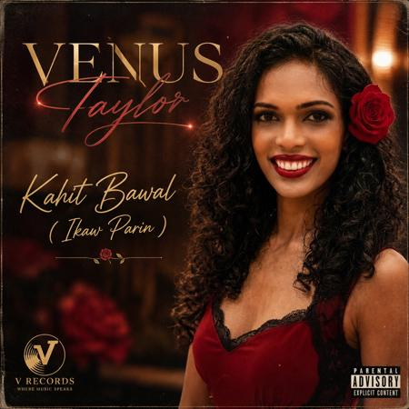

Venus Niebres Taylor didn’t become a singer, songwriter, and performer overnight. Her voice found her at age 4 in the Philippines, singing karaoke at a birthday party for a crowd of neighborhood kids. Whitney Houston’s I Will Always Love You and Run to You were her first lessons in what singing could truly be — not just notes, but power, truth, and soul.
About
Venus Niebres Taylor
Singer. Songwriter. Performer.
Storyteller.

Her voice found her at age 4. The world is finally listening.
From elementary school choir to middle school talent shows and high school pageants, Venus used her voice to stand out. At Kirby Jr. High in the early 2000s, her performance of Mariah Carey’s Hero earned her first runner-up and a $100 prize that meant everything. In high school and college, singing became her signature talent on the pageant stage, earning “Miss Talent” titles alongside top beauty placements as judges connected to the stories she told through song.
From 2004 to 2014, Venus stepped back from music to pursue modeling, marriage, and motherhood. After divorce and the passing of her grandmother, she rediscovered her voice with new purpose. Grief transformed into songwriting — a way to tell the stories that words alone couldn’t hold.
Today, the San Antonio-raised, Austin-based artist creates bilingual R&B, pop, and country infused with the nostalgia of the 90s and 2000s. Singing in English, Tagalog, and Spanish, Venus writes about faith, motherhood, love, and life as a Texas woman. Her music isn’t a trend. It’s a language she’s spoken since age 4 in front of a karaoke machine — and one she’s finally ready to share with the world.